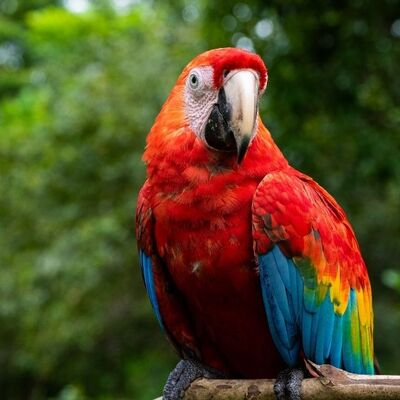
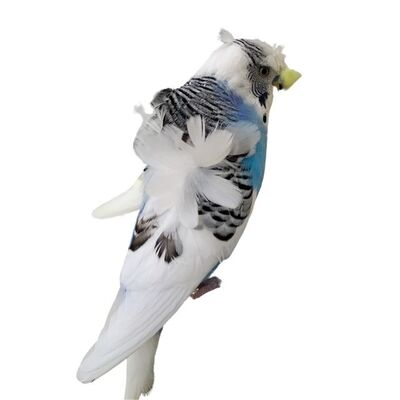
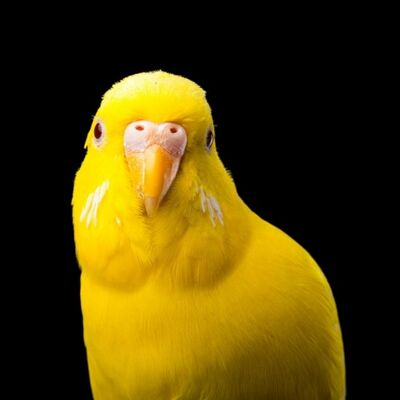
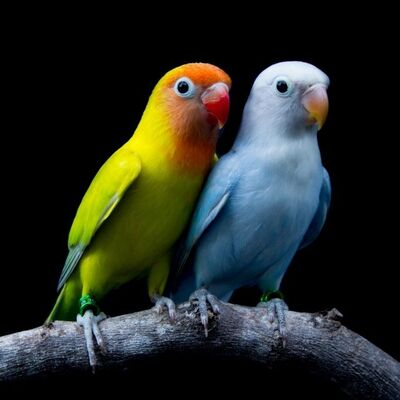
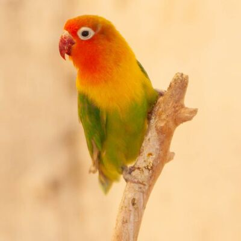

Amerikan Papağanları
Afrika kökenli oldukları bilinen ve en az 350 farklı türü olduğu düşünülen papağanların bazı türleri ise diğerlerinden daha çarpıcı özellikleri ile karşımıza çıkıyor.

Japamese Kuşu
Japanese Crested Budgerigars isimlerini de alan bu kuşların kafalarının üzerindeki şapkaya benzeyen tüylerin vardır.

Lutino Muhabbet Kuşu
“Sarı Albino” adıyla anılan bu kuşlar aslında albinizm rahatsızlığını genlerinde taşımazlar. .

Kanaryalar
Kanaryalar adlarını Latince karşılığı “cannarie” olan ve “köpek” anlamına gelen kelimeden alırlar.

Muhabbet Kuşları
Doğada sürüler halinde yaşayan bu kuşlar bir araya gelebilen ve aynı kafesi paylaşabilen sosyal kuşlardır.

Cennet Papağanları
Cennet Papağanlarının karakteristik özellikleri rengarenk tüyleri ve kıvrık gagalarıdır.